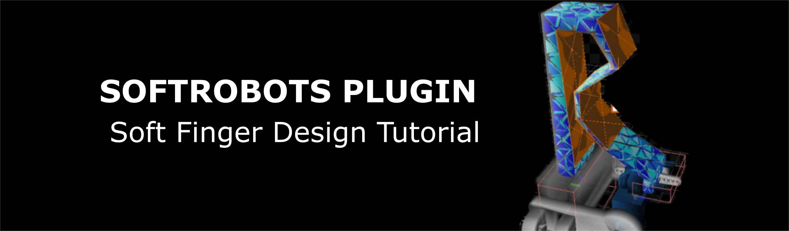
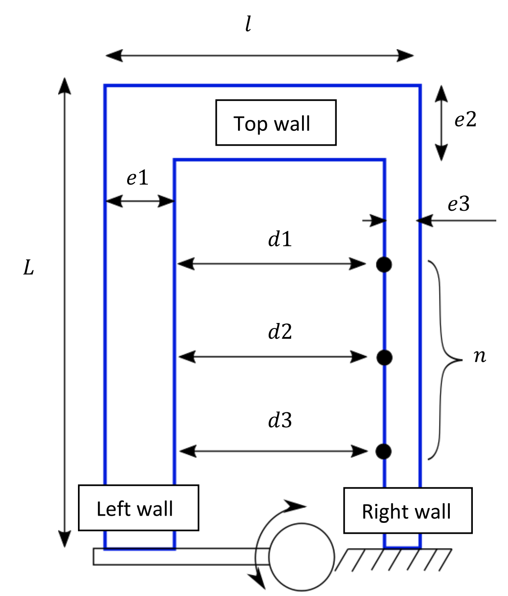

In this hands-on session, we will tackle the problem of designing the deformable body of a soft robotics system while considering the constraints due to the fabrication process(es). For that purpose, we propose you to follow an iterative and interactive design process where fast mechanical simulations are used to predict the system behavior and performances.
As a case study, you are going to optimize the design a soft gripper. There exists many design of soft grippers with different geometries and actuation strategies, such as tendons and pneumatic. For this session, the general design of the gripper is as follows (see Figure 1). It is composed of 3 soft fingers that are actuated by one servo-motor each. As a note, the structural components and the configurations of the servomotors are the same as the Tripod robot (see Tuesday’s hands-on session). While the actuation is given, the question is how to optimize the finger design to maximize the grasping performances while satisfying size and fabrication constraints.
The goal of this hands-on session is to learn how to leverage parametric Computer Assisted Design (CAD) and mechanical models to optimize the finger design iteratively. We propose in particular the use of a python script that will automatically generate a geometry and a mesh, starting from a base finger design and following simple inputs of design parameters. Participants who are already comfortable with soft finger/robot design are free to propose their own CAD design of finger. Don’t hesitate to call the session’s supervisors to discuss your designs! The fingers will be simulated using the mechanical FEM model implemented in the SOFA software in order to have an evaluation of the grasping force. According to the performances obtain, the participants will iterate manually on their design and repeat the process until the design specifications are achieved.
Each participant will have to propose a design of finger at the end of the session, and justify their choice by filling the form at the end of this document. The session supervisors will review the finger designs and select 3 of them, based on the justifications given, to be 3D printed, assembled and tested.
The CAD generation script and the SOFA scene are both based on Python3 (version 3.7 or later). Despite any text editor will work, we highly recommand the use of a dedicated IDE for python (pyCharm, Spyder, atom to cite few others).
The python script interacts with Gmsh (by C. Geuzaine and J.-F. Remacle, version 4.9.5 or later) to generate the volumes of the finger and discretize it with finite elements. To install it, execute the following command in the Python terminal (http://gmsh.info).
python3 -m pip install --upgrade gmshThe mechanical model is implemented using SOFA (binaries of v22.06 with SoftRobots plugin). Please refer to the hands-on session of Monday and Tuesday for installation.
Once the finger will be designed, we will use the slicer software CURA to prepare its fabrication. The last version of the software can be found here: https://ultimaker.com/fr/software/ultimaker-cura
The starting directory for this hands-on session includes a details directory that contains several files and folders: - A Data directory where the generated meshes are stored. The directory initially contains the servomotor 2D mesh (STL CAD) files and the mesh of the cylinder to grasp. - Python scripts for the generation of the finger geometry and meshes: - mesh_finger.py - mesh_clamping.py - mesh_contact_surface.py - A SOFA Python scene file and the utility python scripts that go with it - gripper_simulation.py - actuated_finger.py - elastic_material_object.py - actuated_arm.py - fixing_box.py - s90_servo.py - cylinder.py - A CURA file to prepare the 3D printing program of the designed finger - finger_cura.3mf
Any design process a robotic system, whether it is soft or not, should be conducted to obtain desired specifications. The first step of the process is therefore to determine these specifications. They can be qualitative (ex: obtaining a bending motion with pneumatic actuation), quantitative (ex: elongating over 20% of its initial length), driven by an application (ex: must be soft enough not to damage living tissues in medical interventions) or constrained by the integration of pre-existing parts (ex: the pneumatic components supports a maximum pressure of 100kPa) or by a fabrication process (obtained by casting). The larger the number of specifications, the harder the design process is, in particular when some of them are conflicting each other (ex: generating large forces with a soft manipulator while being compliant to have safe contacts with the environment). For this hands-on session, the design specifications are as follows:


The starting design of soft finger we propose is shown on Figure 3, in the configuration where the servomotor arm is at 0°. The finger (in blue) consists initially in a U-shape, composed of left, top and right walls. The base of the left wall is fixed to the servomotor arm while the right wall is fixed to the gripper base. When actuated, the servomotor pushes on the left wall, provoking the finger’s bending. How much the finger will bend for the fixed servomotor angular displacement, and how much force it will apply on an object to grasp, depends on the finger topology and dimensions. Here, the topology is fixed, and you must determine its dimensions, this process being also called dimensional synthesis. You have access to the following parameters to change this geometry.
| Parameter | Description |
|---|---|
| L | Length |
| l | Width of the top wall |
| e1 | Thickness of the left wall at the finger top |
| e2 | Thickness of the top wall |
| e3 | Thickness of the right wall |
| n | Number of intermediate points evenly spaced on the right wall |
| di | Distances between the intermediate points and the left wall (nx1 vector) |
From your choice of parameters, the python script mesh_finger.py generate the finger’s geometry and the mesh elements the SOFA simulation needs. It first generates a series of points describing the contour of the finger, then generate a surface from this contour and extrude it over a pre-defined finger depth (imposed here). Don’t hesitate to look at the commented code. Finally, the script generates several files from this volume:
The script also generates automatically the geometries we need to attach the finger on the servomotor. Also, the script incorporate the maximum dimension specifications described above. Error messages will pop in the terminal in case the desired finger is too big or some geometries cannot be generated. To generate a new design of finger, you must:
details directory, execute the Python script using the command: python3 details/mesh_finger.pyThe script will then automatically store the generated mesh files in the Data of the starting repository. Note that the starting design we propose you to work with is not necessarily the best design nor the most classical. There is today a vast library of finger and gripper designs in the soft robot community, and finding the optimal one for a given grasping task is not trivial. The design presented here is simple enough to give you some intuition about how the parameters influence the finger performances, but other designs might work very well also. Don’t hesitate to discuss with the session supervisors about it!
The SOFA scene used to evaluate the elastic behavior of the finger and the contact force with the object to grasp is provided in the file gripper_simulation.py. In this scene, we make use of the gripper symmetry to reduce the overall computation time. As the three servomotors and fingers are at the same distance to the object and equally distributed around it, they will apply the same force on it. Because of this, the object is likely to stay approximately at the same location before and after grasping. Therefore, we idealize the grasping scene by considering that the object is fixed in space and by simulating the behavior of one finger only.

The scene contains: - The 3D mesh of the finger along with an elastic force field to simulate its deformation - A box with rigidified mesh nodes at the left wall base, which pose is updated according to the servomotor rotation - A box of rigidified mesh nodes at the right wall base which pose is fixed - A mesh of the object to grasp, fixed in space. - Collision models to account for eventual collisions between the finger and the object, and between the inner surfaces of the left and right walls
Try the scene in SOFA.
import Sofa
from stlib3.scene import Scene
from actuated_finger import ActuatedFinger
from actuated_finger import FingerController
from fixing_box import FixingBox
from stlib3.scene.contactheader import ContactHeader
from cylinder import Cylinder
def createScene(rootNode):
from stlib3.scene import Scene
# Define the main architecture of the scene, with a node Modelling, Setting and Simulation
# Define also the integration method as Euler implicit and the solver as Conjugate Gradient)
scene = Scene(rootNode, gravity=[0.0, 0.0, -9.81],
plugins=['SofaSparseSolver', 'SofaOpenglVisual', 'SofaSimpleFem', 'SofaDeformable', 'SofaEngine',
'SofaGeneralRigid', 'SofaRigid', 'SofaBoundaryCondition', 'SofaMeshCollision'],
iterative=False)
scene.addMainHeader()
ContactHeader(scene, alarmDistance=15e-3, contactDistance=0.5e-3, frictionCoef=0.1)
# Setting the time step
rootNode.dt = 0.01
# Define the default view of the scene on SOFA
scene.addObject('DefaultVisualManagerLoop')
scene.VisualStyle.displayFlags = ["hideInteractionForceFields", "showForceFields",
"showCollisionModels"]
# Add a grid on the scene with squares 10mm/10mm
rootNode.addObject("VisualGrid", nbSubdiv=100, size=1)
# Set up the pipeline for the collision computation
scene.Simulation.addObject('GenericConstraintCorrection')
scene.Settings.mouseButton.stiffness = 10
# Create one actuated finger
actuatedFinger = ActuatedFinger()
scene.Modelling.addChild(actuatedFinger)
# Install an obstacle in the scene/object to grasp
scene.Modelling.addChild('Obstacle')
cylObst = Cylinder(parent=scene.Modelling.Obstacle, translation=[30.0e-3, 0.0, 50.0e-3],
surfaceMeshFileName='Data/cylinder.stl',
MOscale=10e-3,
uniformScale=0.5,
totalMass=0.032,
isAStaticObject=True)
cylObst.mass.showAxisSizeFactor = 1e-2
cylObst.mstate.name = 'dofs'
# Fix the object in space
FixingBox(scene.Modelling.Obstacle, cylObst, translation=[30.0e-3, 0.0, 70.0e-3],
scale=[10e-3, 10e-3, 10e-3])
scene.Modelling.Obstacle.FixingBox.BoxROI.drawBoxes = True
# Add the simulated elements to the Simulation node
scene.Simulation.addChild(actuatedFinger.RigidifiedStructure.DeformableParts)
scene.Simulation.addChild(actuatedFinger.ActuatedArm)
# Add a controller to output some performance metric during the simulation
scene.addObject(FingerController(name='FingerController', objectDof=cylObst.collision.MechanicalObject,
actuator=scene.Modelling.ActuatedFinger.ActuatedArm, node=rootNode))
# Temporary addition to have the system correctly built in SOFA
# Will no longer be required in SOFA v22.12
scene.Simulation.addObject('MechanicalMatrixMapper',
name="deformableAndFreeCenterCoupling",
template='Vec1,Vec3',
object1=actuatedFinger.ActuatedArm.ServoMotor.Articulation.dofs.getLinkPath(),
object2=actuatedFinger.RigidifiedStructure.DeformableParts.dofs.getLinkPath(),
nodeToParse=actuatedFinger.RigidifiedStructure.DeformableParts.ElasticMaterialObject.getLinkPath())
return rootNodeDon’t hesitate to go through the commented code of the SOFA scene for further details. To simulate the finger behavior and determine the final contact force, you must:
gripper_simulation.pyTo restart the simulation, press “Ctrl-R” (reload the scene) and then “Animate”. Note that, in theory, only the final shape of the finger is important to us to evaluate the final contact force. However, as the soft finger constitutes a non-linear elastic system, numerical solvers are likely to diverge if the initial guess the user provides is too far from the actual solution. Therefore, computing intermediate shapes of the finger during actuation improves numerical convergence.
The SOFA scene is also equipped with controller that allows to get simulated data at each step of the simulation and to read user keyboards input. In our case, we use it to display the total contact force between the finger and the object, which is our main performance criterion. To evaluate and display the contact force: - In the simulation, wait for the finger to reach an equilibrium configuration, i.e. the servo-motor and the finger stop moving. - Print the contact force in the terminal by pressing on the keys “Ctrl+P”. Make sure you activated the visualization window of SOFA by clinking on it when you want to interact with the simulation.
The value displayed in the terminal is the sum of the normal component of the contact forces applied on the object. Just considering the normal component magnitude will be enough for this hands-on session, but considering the force direction and the localization of the contact might also be of interest for a gripper design.
So far, we performed only one design iteration through steps 1 to 4. Model-based design processes are generally iterative. The performances obtained for a given design are compared to the desired ones, and the design parameters are changed by the user to reduce the error (similarly to a closed-loop control scheme). This iteration process can be partly to fully automated using off-the-shelf numerical optimization methods such as gradient-descent. Note that using these tools may require additional work, such as reformulating the soft robot model and the optimization problem to obtain a mathematical form suitable for optimization (quadratic cost function to ensure convexity for example). Other methods like evolutionary algorithms can also be used to search the design space of parametric designs efficiently. Instead of optimizing a single candidate, these methods evaluate populations of candidates which evolve over generations. In our case, to avoid going deep on the problem formulation and to get intuition on how the design parameters affect the finger performances, we will iterate manually on the design parameters. Therefore, you need to:
Some advices: - Try to vary one parameter at a time (at least at the beginning), to learn its influence on the finger behavior - Keep notes of what designs you already tried - Be careful when choosing high values of the walls’ thickness, as you might in fine go over the limit of material quantity for the fabrication - Be careful also when choosing low values of the walls’ thickness, as it may conflict with the filament diameter.

When an optimal design is found, the last step is to check if the part can actually be fabricated, and if so to create the fabrication program. Here we consider 3D printing to fabricate the finger. This process requires before-hands to create the printing program using a slicer software, here CURA. In this software, the part to print must be included, positioned and oriented with respect to the printer building plate, and sliced to generate the path the extruder must follow. - Open finger_cura.3mf using CURA. The software displays a 3D view of the printer and the building plate. We already specified the type of printer and the fabrication settings related to the flexible filament in the file. - Click Open (foler icon on the top left) and select the surface mesh finger.stl in the Data folder. The finger should now appear on the building plate. - Check the orientation of the finger. This information is critical in 3D printing in general, as it will dictate the mechanical properties and geometrical tolerances of the final part. As the finger is an extruded planar shape, and as we mainly need it to bend, the most natural orientation is with the planar shape coplanar with the building plane. (as depicted on the Figure). If CURA did not already place the finger in this configuration, rectify this by selecting the part and using the buttons on the left. - Click on “Slice” on the bottom right - Preview the 3D printing. Most slicer software propose this option. By clicking “Preview” on the bottom right (or the top center), and playing with the cursor on the right, you can visualize the different layers the printer will do. - Check if the finger will be printed as intended. - Check the quantity of material required for the fabrication on the bottom right. If the filament mass goes beyond the maximum value of 15g (see specifications), you must go back to step 5 and adjust your design. You can leave CURA open and modify your design, the software will propose you to reload the file while keeping the same orientation.